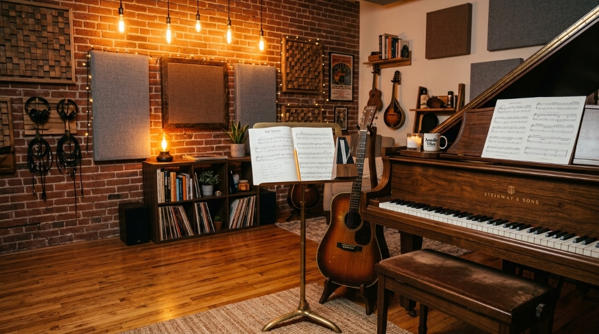
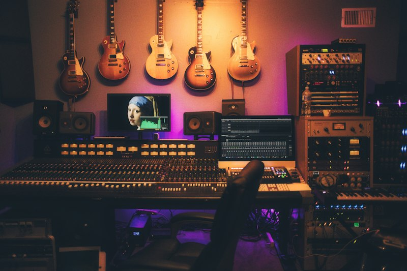

Cansado de decorar escalas e partituras por meses antes de tocar sua primeira canção? No Studio Harmonia, a música que você quer tocar é a base do seu aprendizado prático desde o minuto zero.

Nada de métodos chatos e anos só de teoria sem tocar nada. Aqui você toca suas músicas preferidas nas primeiras 4 semanas, com postura correta e ouvido musical refinado.
Selecione suas preferências e descubra exatamente o que você será capaz de tocar em 8 semanas:
Legião Urbana, Beatles & Coldplay
Troca fluida de acordes sem pausas e batida constante no metrônomo
Aulas dinâmicas que unem técnica instrumental, percepção auditiva e prática no instrumento.
Instrumentos de alta performance, microfones profissionais e isolamento sonoro para sua prática.
Da postura correta à leitura rápida de partituras e cifras populares com harmonia moderna.
Técnicas de dedilhado, solos, batidas rítmicas e improvisação no seu estilo predileto.

Grave seus próprios covers e composições com qualidade profissional no estúdio da escola.
Metodologia prática que coloca você tocando suas canções preferidas desde a primeira aula.
Clique para ver os detalhes sobre prazos, agendamento e formas de pagamento.
"Sempre sonhei em tocar piano. Em 3 meses já consigo tocar minhas músicas favoritas!"
"Professor nota mil! Didática leve, sem enrolação teórica chata."
Estúdio acusticamente tratado para piano, violão, guitarra, técnica vocal e bateria para crianças, jovens e adultos.